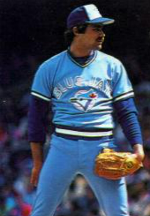
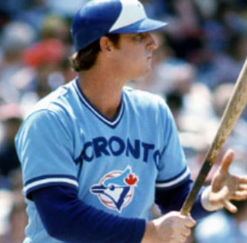

THE BEGINNING (1970-1980)
THE START OF IT ALL
SUMMARY OF TIMELINE:
1977

- The Original Expansion
- March 1976, American League decided to expand to Toronto
- Franchise was originally dealt to:
- Canadian Imperial Bank of Commerce
- Labatt's Breweries
- Team Name Contest:
- Attracted over 30,000 entries
- Popular name at the time was: "Blues"
- However, it was the same name as most University of Toronto teams
- Eventually decided that the team would take on the name: "Blue Jays" by board of directors
- First Game:
- Took place on April 7th, 1977
- Ballpark: Exhibition Stadium -- in Toronto
- Score: A 9-5 Victory Over the Chicago White Sox
- Fan attendance: 44,649
- Game was known for:
- Freezing cold snow conditions
- Long delay
THE NEXT FEW YEARS (UP TO 1981):

- Team Performance
- From 1978-1981: The Blue Jays were...
- 1. Last in their division
- Finished more than 100 losses (out of 162 games) 3 times
- Near the bottom in MLB and the American League
- However, the main focus was fan attendance, and a slow rebuilding process towards success
- Drew Record Fan Attendances for an Expansion Team
- Brief look into the future (1980-1990)
- After 1981, Blue Jays started to get competitive
- Eventually made their first playoff berth
- Started to push towards the World Series (Championship)
TABLE OF MLB SEASONS
| MLB Season |
Record |
Team |
| 1977 MLB Season |
Record: 54W-108L |
Toronto Blue Jays |
| 1978 MLB Season |
Record: 59W-102L |
Toronto Blue Jays |
| 1979 MLB Season |
Record: 53W-109L |
Toronto Blue Jays |
| 1980 MLB Season |
Record: 67W-95L |
Toronto Blue Jays |